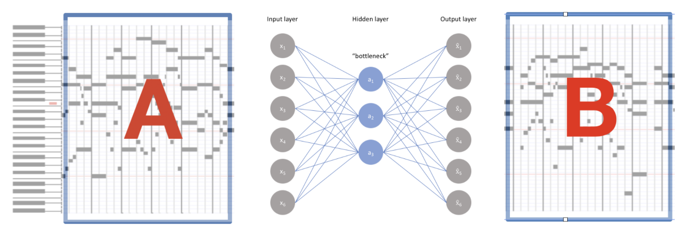

Automatic Music Composition and Completion¶
We present a new symbolic approach to automatic music generation. First we create a dataset of 62 hours of Mozart music represented by binary piano roll arrays. The dataset is used to train a 1-hidden layer neural network to predict a section of music given the surrounding music. After training we will use our model to continu- ously predict and replace random sections of existing music completely altering the original into what we consider new music.
Introduction¶
In this post we are attempting to generate music that utilizes the clarity and low com- putational cost of a symbolic representation while maintaining a good variation and global structure. However unlike the usual approach to generate music we will not use any form of sequence modeling mechanism. Instead we will attempt to create a new sequence of music by altering an existing sequence of music. To accomplish this, we will train a neural network to predict a missing section of music given the surrounding music. After trining, we will use our model to predict and replace sections of existing music.
Method¶
The neural network will only have 1-hidden layer. This is considering that we want to condense compositional information. We are more interested in the network learning general harmonic patterns than subtle stylistic elements so we start with 1-hidden layer and proceed according to the results. The neural network model is an adaptation to the CBWM introduced by Mikolov et al. to the many-hot case. Notably, we will also replace the last softmax layer in the CBWM by a sigmoid layer with N outputs. This will allow us to separately predict each note on the piano roll. The input layer takes a binary vector which represents a musical section. The task is then to predict the musical section in the middle , see figure below for a visualization of the training process.
.png)